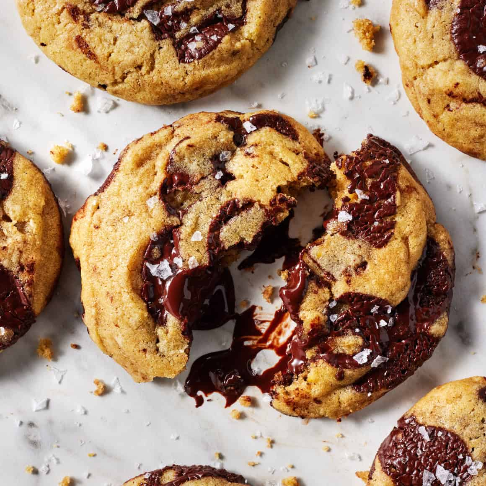

Chocolate Chip Cookies

Description
Soft and chew chocolate chip cookies with perfect texture. Easy to make
with basic ingredients and equipment. No stand mixer necessary.
Ingredients
- All-purpose flour
- Baking soda
- Brown sugar and granulated sugar
- Melted butter
- An egg and an egg yolk
- Vanilla extract
- Chocolate chips
- And sea salt
Steps
- Whisk together flour, baking soda, and salt. In a larger bowl, whisk together
the melted butter, granulated sugar, and brown sugar.
- Add the egg and egg yolk to the bowl with the butter mixture and whisk until
well combined. Then, whisk in the vanilla.
-
Add dry ingredients to the wet ingredients and use spatula to mix until well combined.
-
Add chocolate chips and then mix until chips are well distributed.
-
Chill the dough. Cover and refrigerate it for at least 30 minutes and at most 2 days.
-
Line two baking sheets with parchment paper. Use a cookie scoop to portion the dough onto the baking sheets,
leaving at least 2 inches between cookies.
-
Finally, bake the cookies, one sheet at a time, at 350F for 9 to 11 minutes, or until
edges are golden brown. Let them cool.
Home